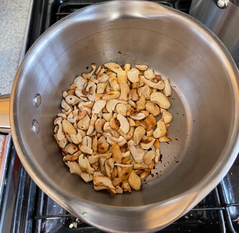

Lamb tagine
Lamb
- Fry until brown on all sides
- olive oil
- 250g lean lamb cut into chunks
Tagine
- Heat until soft in big pot
- olive oil
- 2 large onions
- 1 pepper
- Add and cook for 2 mins
- 4 cloves of garlic
- pinch of saffron threads
- 2 tsp ras el hanout
- Add and simmer on low heat for 25 mins
- 1 sweet potato cut into large cubes
- 8 mushrooms
- 400ml vegetable stock
- 200ml passata
- 200g apricots halved
- 50g raisins
- lamb
- Add and cook for 10 mins
- 1 tin artichokes halved
- 1 tin chick peas drained
- Add
- 50g green olives halved
- 75g roasted cashew nuts chopped
- 1 tbsp harissa
- small bunch coriander or parsely
Serve with
Notes
